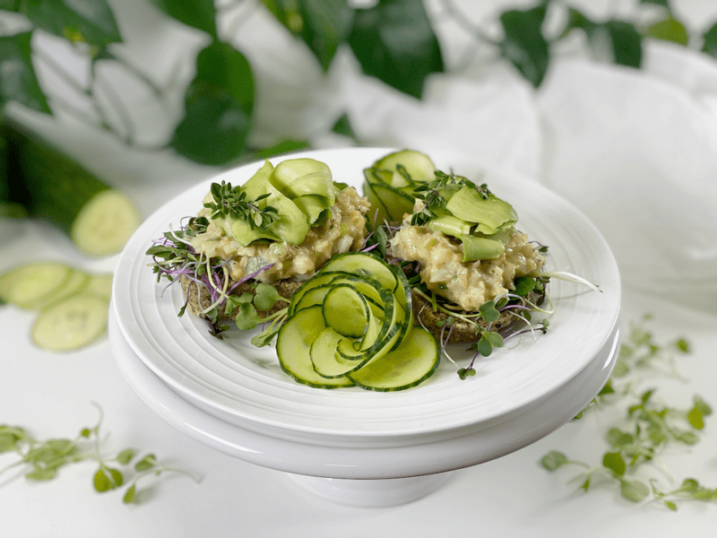
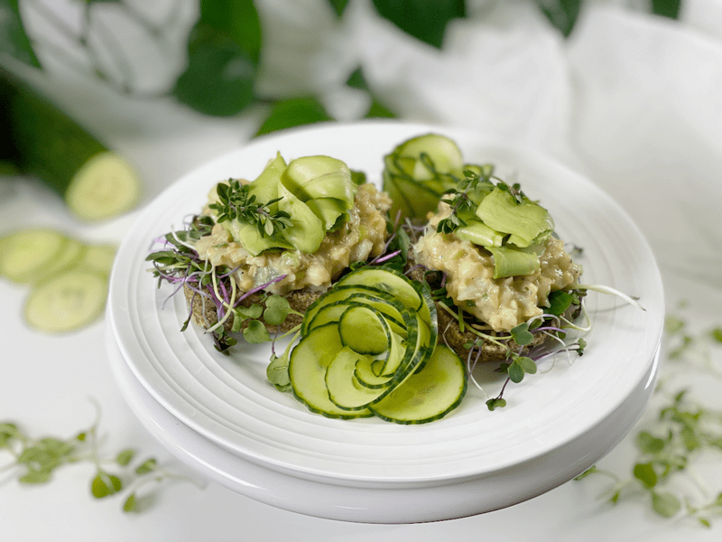
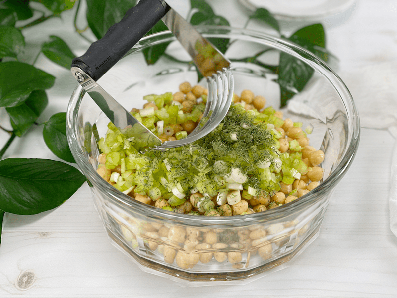
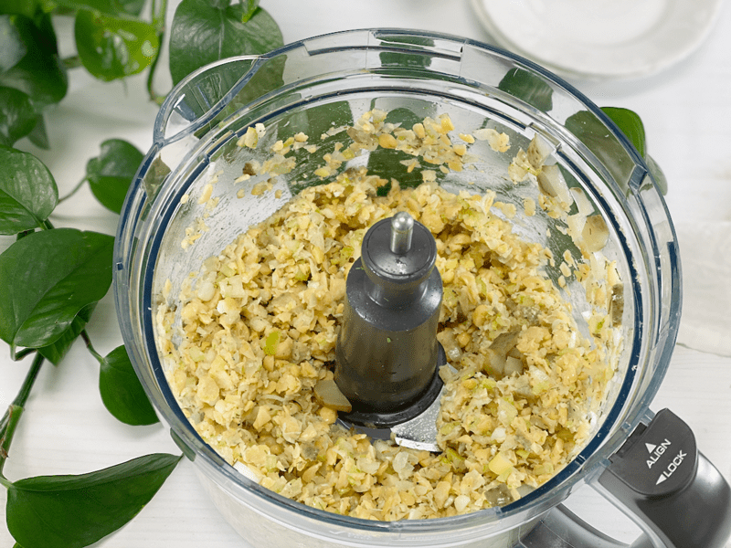
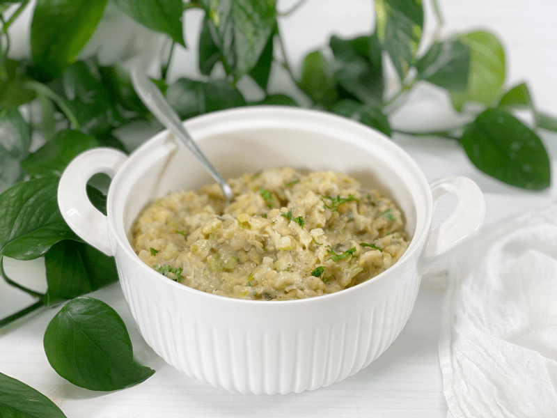
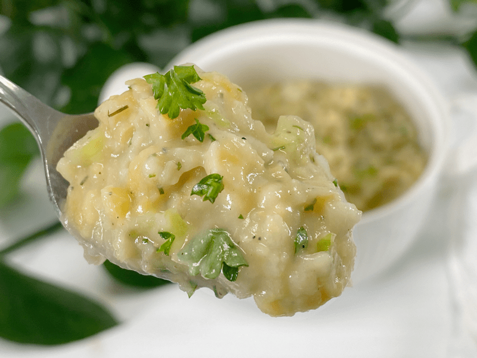
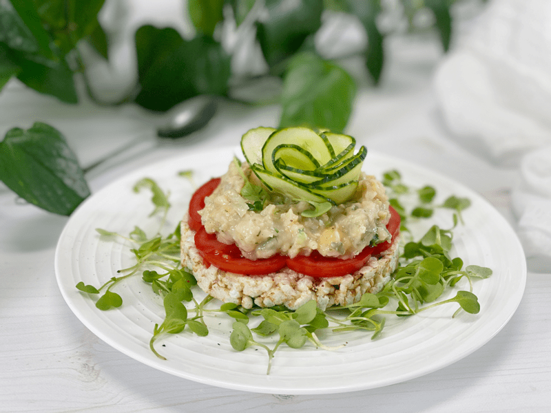
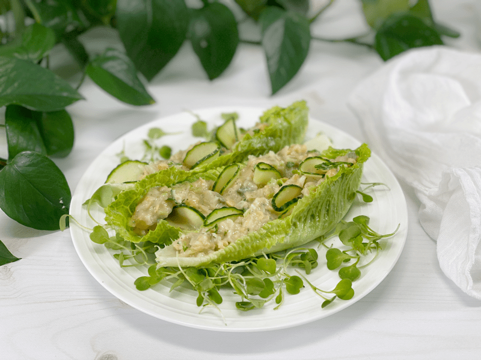

Chickpea Salad Sandwich | Oil-Free
For the past few days, I have been craving an egg salad sandwich. Since I don’t eat eggs, I examined my craving and decided that I was just hungry for a sandwich. Since I had some freshly cooked chickpeas in the fridge, I decided to make a chickpea version. It turned out so refreshing and nailed my craving right to the plate!

I had Bob take a taste test after I scarfed down a third of the bowl. He said, “Ooh, tabouli!” I looked cross-eyed at him. “Whatchu talking about, buttercup? This is not tabouli, and it doesn’t taste like tabouli.” Silly man. “Let me try another bite.” Here comes the airplane… another spoonful landed in his mouth. “Yeah, you’re right–not tabouli, but you should make some.” What a goofball. I guess I better start thinking about a tabouli recipe now, BUT not until I am done enjoying this lovely bowl of goodness!
Ways to Enjoy Chickpea Sandwich Salad
- Well, as the title might indicate, it is amazing in a sandwich, so that’s one way. In the photo below, I made an open-face sandwich with my raw, vegan, gluten-free Dill and Caraway Bread, fresh microgreens, avocado ribbons, and cucumber flowers.
- Create lettuce boats, filling them with the chickpea salad; add some thinly sliced red pepper, and maybe some cucumber. I had three of those for lunch.
- It also tastes amazing on a rice cake. I created a thin layer of ripe garden tomatoes, spread some chickpea salad on it, and topped it with a cucumber flower. I had that for lunch, too.

Ingredient Run-Down
Chickpeas
- For the ultimate best taste and texture, use home-cooked chickpeas.
- Cooking the chickpeas with kombu seaweed will ramp up their nutrition.
- Home-cooked chickpeas don’t have added salt. Most canned goods have salt in them, but they use the wrong salt that doesn’t include all the 84 trace minerals that you can get from sea salts.
Dill Pickles
- I use both the pickles and the brine in this recipe, which adds a punch of flavor, with a balanced sharp bite from the vinegar, garlic, and dill, but which isn’t overly salty. Choose your pickles wisely. There is a wide range of pickles on the market, which come with different flavor profiles. Some pickles have warming spices (cayenne, red pepper, etc.) that would affect this recipe–not to say that’s a bad thing; just make sure you enjoy the pickles and brine that you choose.
Green Onions
- Otherwise known as spring onions or scallions, they have a sweeter, milder flavor than mature onions. I used both parts of the green onion–the white part as well as the green leaves.
- If you don’t have green onions on hand, you can use white or yellow diced onions, which will impart a stronger onion taste.
Dijon & Yellow Mustard
- The mustard adds that extra punch of flavor that complements the pickle brine. It has a distinctive mustard flavor but is a tad more intense and complex than yellow mustard. It is made with brown and/or black mustard seeds and white wine.
- If you’d rather replace the dijon mustard with standard yellow mustard, knock yourself out (not literally, ’cause I am not there to pick you up). It will add a pop of color, as dijon mustard pales in comparison to the bright yellow color of mustard, and the tangy brightness of yellow mustard will add a more insistent flavor.
As you pull this recipe together…taste test! If you don’t walk away with any other tidbit from this site, I certainly hope that you learn how vital it is to taste test as you build and complete a recipe. Recipes are built upon a formula, but they are victorious only when you use good quality ingredients that are fine-tuned to YOUR palate. If a chef is using an ingredient that you often find overwhelming or undesirable, reduce the measurement and build up from there. I hope you enjoy this recipe–please leave a comment below and have a blessed day, amie sue
 Ingredients
Ingredients
Yields 3 1/2 cups
- 2 cups chickpeas, cooked
- 1/2 cup diced dill pickles
- 1/2 cup celery, finely chopped
- 1/2 cup diced green onions, including the greens
- 1 tsp dried dill
- 1/4 tsp black pepper
- 1 Tbsp chopped fresh parsley
Dressing
- 1 medium (165 g) potato, peeled and steamed
- 1/2 cup cooked white beans
- 1/2 cup brine from pickles
- 1 Tbsp dijon mustard
- 2 tsp yellow mustard
- 1 tsp sea salt
- 1/4 tsp black pepper
Preparation
- In a large bowl or food processor, fitted with the “S” blade, combine the chickpeas, pickles, celery, onions, dill, black pepper, and parsley. Set aside
- Using a potato masher, mash the mix together, breaking down the chickpeas a little bit. OR
- If you use the food processor, pulse the machine just a few times to break the chickpeas down.
- In a blender, combine the potatoes, white beans, pickle brine, mustard, salt, and pepper. Blend until creamy.
- I used cannellini beans and also left the skins on the potatoes.
- Combine the chickpea mixture with the sauce.
- Enjoy right away or store in the fridge for 3-4 days.
-

-
You can either mash the mixture with a potato masher or…
-

-
You can pulse it a few times in the food processor (my preference).
-

-
You can use this recipe in so many ways throughout the week (pictures coming).
-

-
I always like to do a close-up photo for you so you can see the end texture.
-

-
Here we enjoyed it for a snack served up on a rice cake.
-

-
Then I had more for lunch (it was that good) serving it up in lettuce boats.
© AmieSue.com